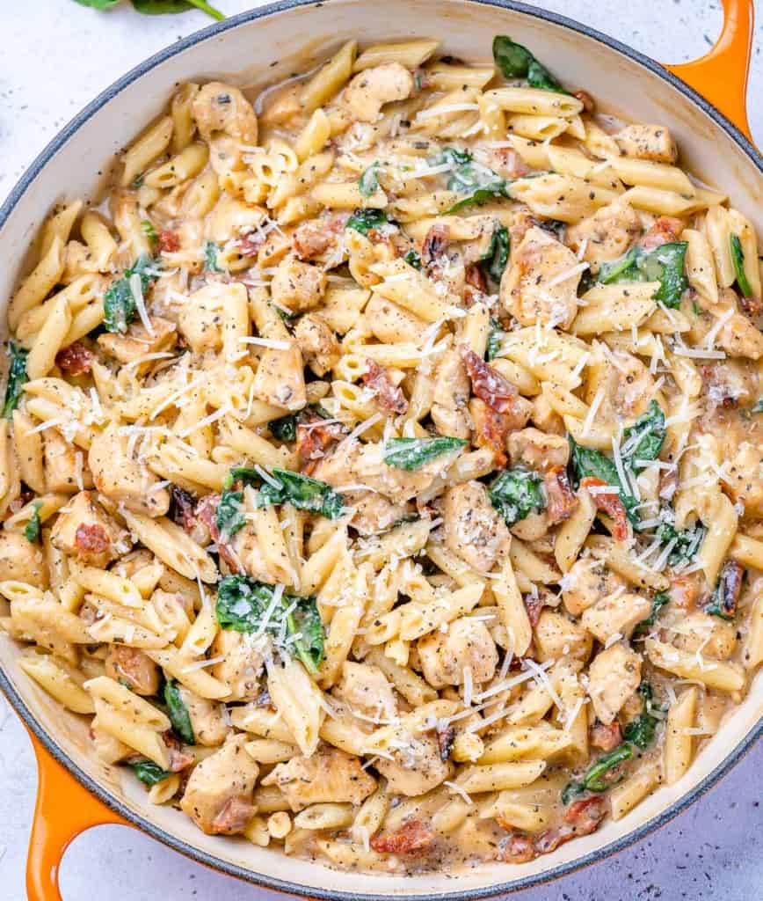

Creamy Tuscan Chicken

Description
This lovely creamy dish is a perfect weeknight meal! It's full of protein,
carbs, and can be made vegan. We love this dish and will rotate it in every
other week or so.
Ingredients
- 12oz Pasta
- 2lbs Boneless Skinless Chicken Breast
- 2 TBSP Olive Oil
- 3-4 Garlic Cloves
- 1 tsp Italian Seasoning
- Kosher Salt and Ground Pepper
- 8 oz Sun Dried Tomatoes in oil, drained and chopped
- 3 Cups almond milk (or any milk)
- 2 TBSP Flour
- 3 Cups Baby Spinach
- 1/2-1 Cup Parmesan Cheese
Instructions
- Bring a large pot of salted water to the boil and cook the pasta according to package directions to al dente.
- Chop chicken into 1-inch pieces and place into a bowl. Stir in the oil, garlic, Italian seasoning, salt, and pepper.
- Heat a large frying pan over medium-high heat. Once hot, add chicken in a single layer and cook undisturbed for 2-3 minutes, or until golden brown. Stir in the sun-dried tomatoes and continue to cook until cooked through about 5-7 minutes.
- Heat a large frying pan over medium-high heat. Once hot, add chicken in a single layer and cook undisturbed for 2-3 minutes, or until golden brown. Stir in the sun-dried tomatoes and continue to cook until cooked through about 5-7 minutes.
- Pour the milk mixture over the cooked chicken in the pan, and mix well to combine. Allow the sauce to bubble for a few minutes to thicken up. It should take no more than 3-4 minutes.
- Once the sauce is done, add spinach and stir until wilted.
- Add cooked pasta together with grated parmesan and stir to combine. Enjoy.